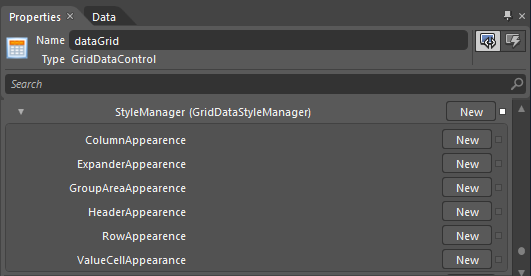

The appearance of the GridDataControl can be customized using Microsoft Expression Blend 3 or 4®. This can be achieved through StyleManager property of type GridDataStyleManager. The properties required to customize the appearance are defined in GridDataStyleManager class.

Figure 166: Blend Property Window showing StyleManager properties
GridDataStyleManager properties are organized under 6 groups, each representing a specific area of the GridDataControl.
· Column
· Expander
· Group Area
· Header
· Row
· Value Cell

Figure 167: Diagrammatic Representation Of GridDataStyleManager Groups
Note:
Previously, the appearance of the GridDataControl can be customized through IGridDataVisualStyle interface. Even if the visual style is set for GridDataControl, the value set in the GridDataStyleManager will be taken as per preference.
 Column Appearance
Column Appearance